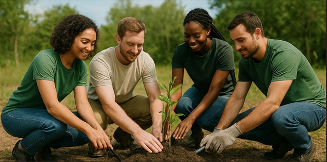
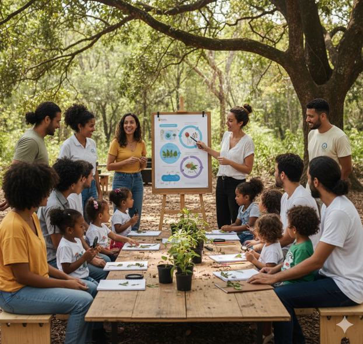
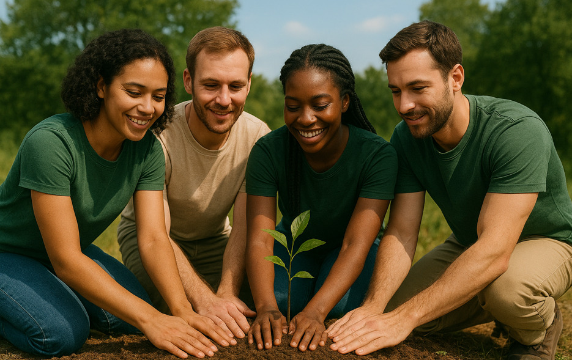

Pilar I: Reflorestamento Estratégico
Foco na recuperação de áreas de preservação permanente (APPs) e nascentes, utilizando apenas sementes nativas e promovendo a biodiversidade.

Acreditamos que a ação local gera impacto global. Nossos projetos são estruturados em pilares essenciais que buscam a restauração e a educação ambiental contínua.
Foco na recuperação de áreas de preservação permanente (APPs) e nascentes, utilizando apenas sementes nativas e promovendo a biodiversidade.

Workshops, palestras e materiais digitais para escolas e comunidades, transformando cidadãos em agentes de mudança ambiental.

Seja um Doador ou Voluntário. Sua contribuição mensal ajuda a manter nossos projetos ativos. Doe e garanta o plantio de 5 novas árvores nativas.
Seja mensal, trimestral ou um único valor, sua ajuda faz a diferença. Utilizamos 100% dos recursos em mudas, manutenção de áreas e materiais educativos.
Quero Doar Agora →